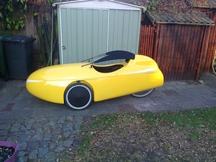

Voor mijn woon werk verkeer heb ik een velomobiel aangeschaft. Het is een Strada geworden. Grootste drijfveer was toch wel 3 wielen en droog zitten als het regent. Tevens is de fiets ook lekker snel. Ik heb er voor de winter marathon plus banden onder zitten want ik heb geen zin in lekke banden. Wat ik van de zomer doe weet ik nog niet.

Wat ik wel gewijzigd heb is de schroefjes van het versatel dakje andersom er op gezet. Nu steekt het moertje naar buiten inplaats van in de kuip waar ik steeds met mijn lange stelten (1.92m) tegen aan kwam. Het bout kopje is iets platter en dat helpt een beetje.
De GPS voor de toertochten heb ik tegen de rechter wielkast hangen. Een stukje hout op de moer van de veering zodat ik een beugel heb voor de karabijnhaak van de Garmin Oragon 450. Helaas slingerde de GPS wel eens van de wielkast af dus heb ik met een oud koortje met klip hem vast gebonden aan de bidon houder.
De accu loopt langzaam achteruit na bijna 2 jaar gebruik. Als ik nu mijn langere tocht naar Helmond doe waardoor ik in de winter 2.5 uur licht nodig heb dan kan je duidelijk zien dat de accu al bijna leeg is want de richtingaanwijzers laten dan het voorlicht sterk dimmen (inwendige weerstand van de accu is tehoog geworden). Waarschijnlijk is een van de cellen wat slechter geworden en leverd de beperkte range. In het eerste jaar had ik daar veel minder last van. Na een tijdje rond gezocht te hebben ben ik uit gekomen om lifepo4 accu's te gaan gebruiken. Deze accu's hebben een 3.2V werk spanning dus met 2 cellen heb ik de 6V die ik nodig heb. De huidige nimh accu levert ook iets meer dan 6V als die vol is (5 cellen nimh kan 7.2V leveren). De maximale spanning van de lifepo4 is ongeveer 3.5V (mag maximaal 3.65V geladen worden). Met de 2 cellen lifepo4 heb ik dus geen extra electronica nodig in de fiets gewoon direct aansluiten. Ik heb 2 10Ah cellen gekocht (veel meer capaciteit dus ook langer licht). Goed ze wegen totaal 700 gram dus ook 2 maal zozwaar als voorheen.
Ik heb een 3 XLR polige plug aan het pack gesoldeerd. Hiermee kan ik dan met een 5 aderige kabel meteen een balancer mogelijkheid inbouwen voor de lader. Ik heb ook de tweede plug van het oude accupack verwijderd.
Deze kan ik dan voor het nieuwe pack gebruiken. Hiermee heb ik geen wijzing in de fiets dus kan ik altijd terug naar de oude situatie. Dit is de samengestelde accu met de XLR plug en de aansluiting voor de fiets.
En hier is een foto van de lader die ik gekocht heb. Ik ben benieuwd hoe goed ik nu de winter doorkom. De kabel is ongeveer 2m lang zodat ik makkelijk kan laden zonder dat de accu uit de fiets hoeft.